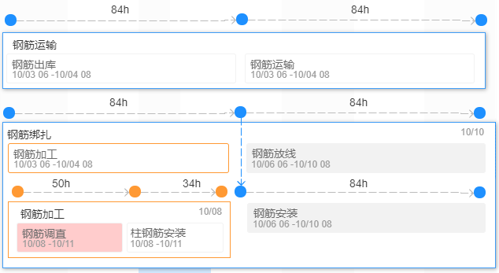

分级预警
一级（30天）:
二级（15天）:
三级（7天）:
进度预警
进度提前:
非关键线路延迟:
关键线路延迟:
导入
导出
刷新
{{item.num===0 ?(sdAllVal.direction == 1 ? sdAllVal.endMileageFormat : sdAllVal.startMileageFormat) : item.num}}
{{ sdAllVal.direction == 1 ? sdAllVal.startMileageFormat : sdAllVal.endMileageFormat}}
{{record.time}}
{{record.widthVal}}米
{{record.widthVal}}m
当前月进度指标{{sdAllVal.monthlyProgress}}m/月
{{v.partName}}
注：总长{{sdAllVal.totalLenght}}m，已完成开累{{sdAllVal.quantityImpl}}m，剩余{{sdAllVal.residue}}m，预计
xxx
{{sdAllVal.residue >= 0.1 ? (Number(sdAllVal.expectedCompletionDays)+1) : sdAllVal.expectedCompletionDays}}
天后完成

{{oobj.row.partName}}


 {{obj.row.expectStartTime}}
{{obj.row.expectStartTime}}
{{obj.row.expectEndTime}}
{{obj.row.expectEndTime}}
{{obj.row.gongqi}} 天
{{obj.row.duration}}天
{{obj.row.gongqi}} 天
{{obj.row.duration}}天
{{obj.row.expectStartTime}}
{{obj.row.expectStartTime}}
{{obj.row.expectEndTime}}
{{obj.row.expectEndTime}}
{{obj.row.gongqi}} 天
{{obj.row.duration}}天
{{obj.row.gongqi}} 天
{{obj.row.duration}}天


 计划工期：{{obj.row.yuceTime}}
预计工期：{{obj.row.shijiTime}}
实际工期：{{obj.row.shijiTime}}
预计工期：{{obj.row.shijiTime}}
实际延迟天数：{{obj.row.yanchiTime}}
实际提前天数：{{obj.row.fuyanchiTime}}
预计延迟天数：{{obj.row.yanchiTime}}
预计提前天数：{{obj.row.fuyanchiTime}}
计划工期：{{obj.row.yuceTime}}
预计工期：{{obj.row.shijiTime}}
实际工期：{{obj.row.shijiTime}}
预计工期：{{obj.row.shijiTime}}
实际延迟天数：{{obj.row.yanchiTime}}
实际提前天数：{{obj.row.fuyanchiTime}}
预计延迟天数：{{obj.row.yanchiTime}}
预计提前天数：{{obj.row.fuyanchiTime}}
部位名称：{{enterVal.name}}
计划开始时间：{{enterVal.startTime}}
计划结束时间：{{enterVal.endTime}}
预测开始时间：{{enterVal.expectStartTime}}
预测结束时间：{{enterVal.expectEndTime}}
实际开始时间：{{enterVal.sjStartTime}}
预测结束时间：{{enterVal.expectEndTime}}
实际开始时间：{{enterVal.sjStartTime}}
实际结束时间：{{enterVal.sjEndTime}}
计划工期：{{enterVal.yuceTime}}
预计工期：{{enterVal.shijiTime}}
实际工期：{{enterVal.shijiTime}}
预计工期：{{enterVal.shijiTime}}
延迟天数：{{enterVal.yanchiTime}}
提前天数：{{enterVal.fuyanchiTime}}
计划开始时间：
计划结束时间：
预测开始时间：{{GxTimeChangeVal.expectStartTime}}
预测结束时间：{{GxTimeChangeVal.expectEndTime}}
工期（天）：
{{timenode.gongqi}}
预测开始时间：
{{timenode.expectStartTime}}
预测开始时间：
预测结束时间：
{{timenode.expectEndTime}}
预测结束时间：
计划开始时间：{{timenode.startTime}}
计划结束时间：{{timenode.endTime}}
工期（天）：
{{timeFiveNode.duration}}
计划开始时间：{{timeFiveNode.startTime}}
计划结束时间：{{timeFiveNode.endTime}}
实际开始时间：{{timeFiveNode.sjStartTime}}
实际结束时间：{{timeFiveNode.sjEndTime}}
实际开始时间：{{timeFiveNode.sjStartTime}}
预测结束时间：{{timeFiveNode.expectEndTime}}
预测开始时间：{{timeFiveNode.expectStartTime}}
预测结束时间：{{timeFiveNode.expectEndTime}}
取 消
确 定
已选部位
{{v.fullName}}

部位
部位+工序
是否初始化：
当前月进度指标{{sdAllVal.monthlyProgress}}m/月
注：总长{{sdAllVal.totalLenght}}m，已完成开累{{sdAllVal.quantityImpl}}m，剩余{{sdAllVal.residue}}m，预计
xxx
{{sdAllVal.residue >= 0.1 ? (Number(sdAllVal.expectedCompletionDays)+1) : sdAllVal.expectedCompletionDays}}
天后完成
进尺数量：
取消
确定